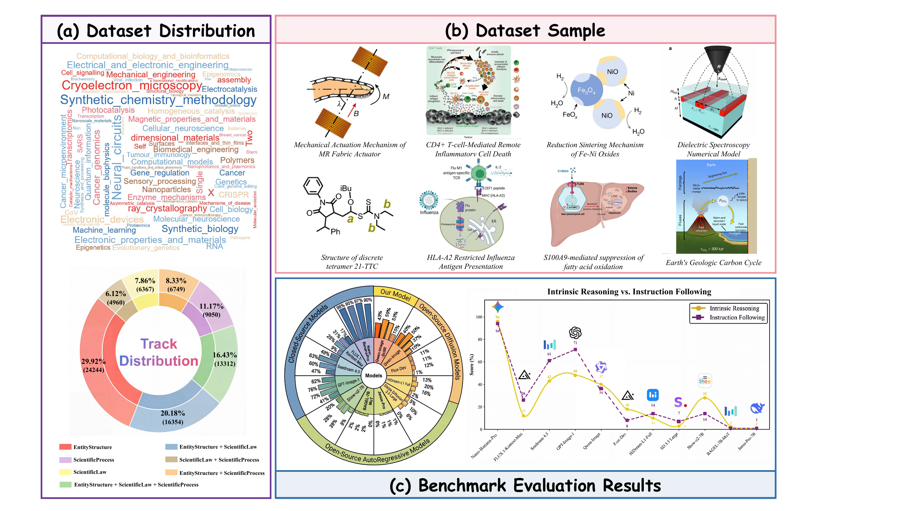
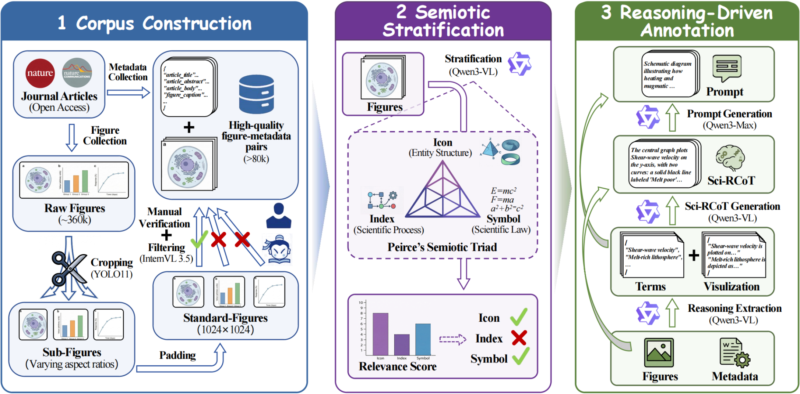
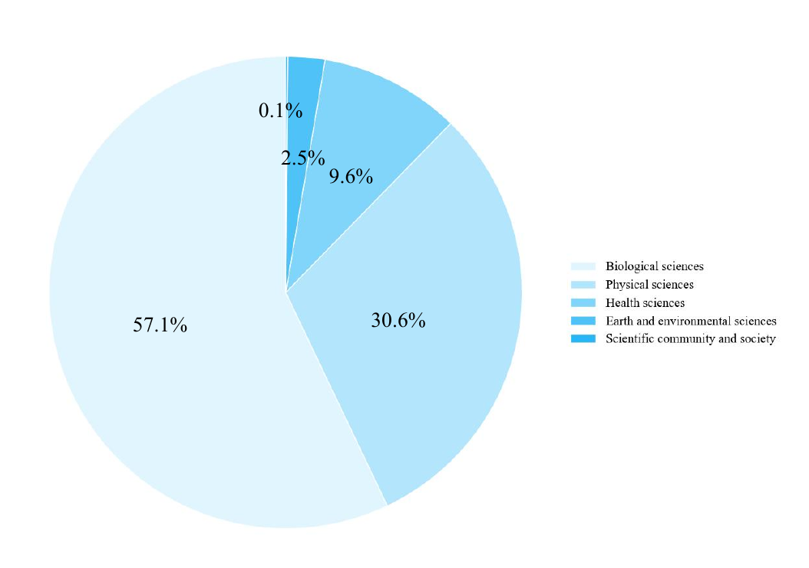
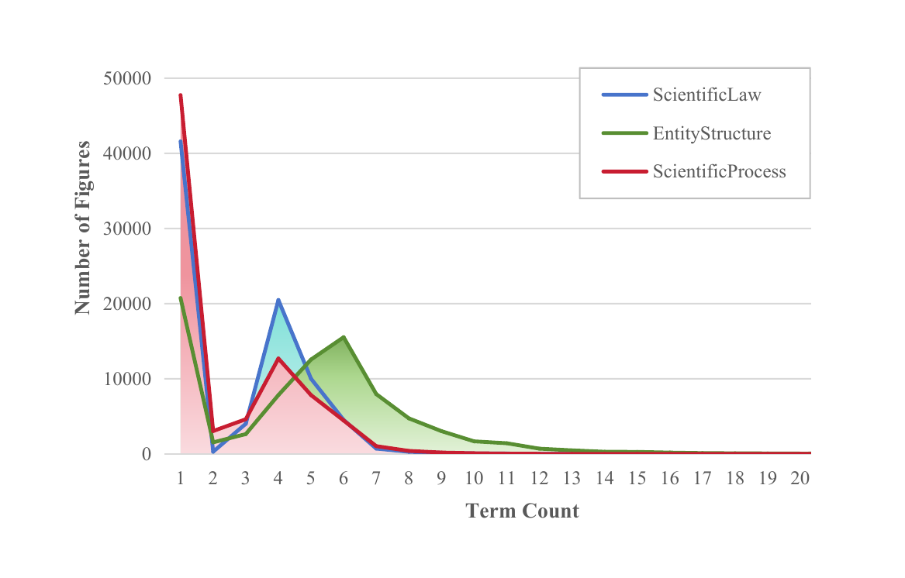
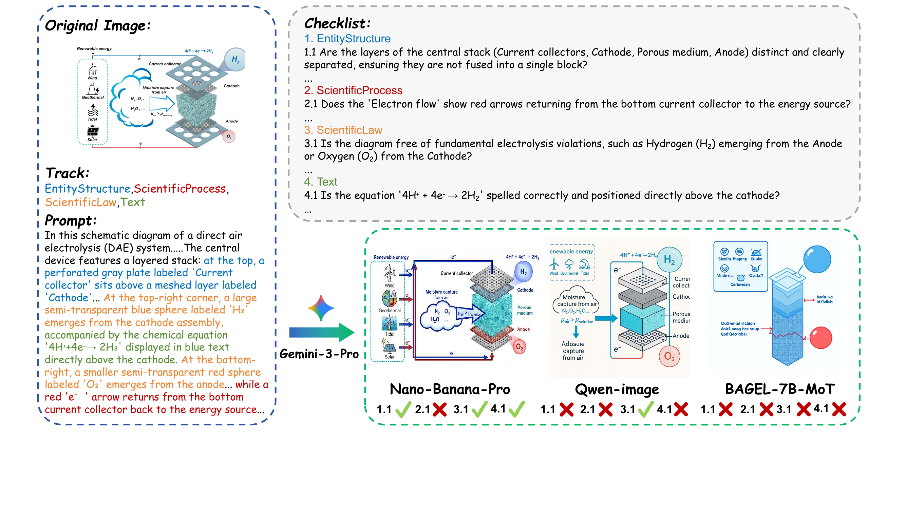
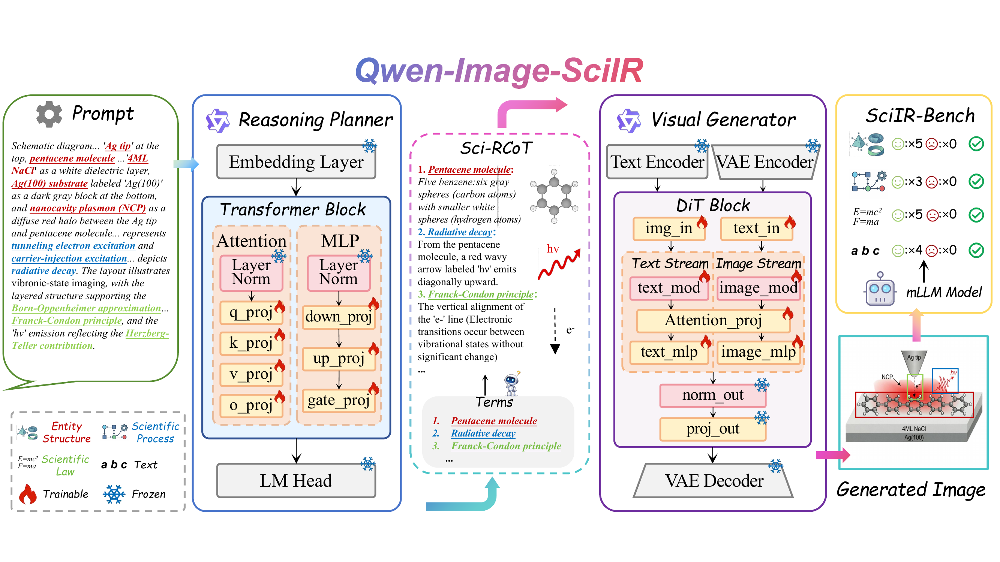
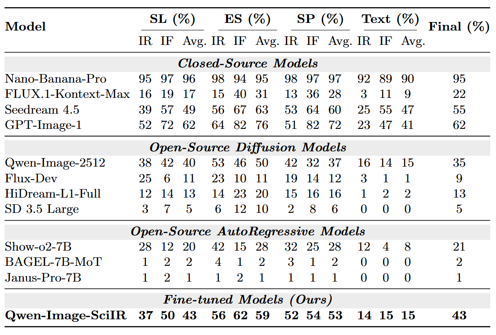
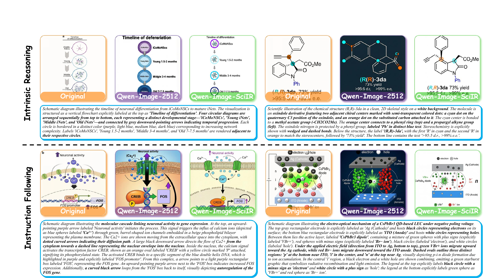

Grounding scientific image generation in Peirce's Semiotic Triad.

Geometric hierarchy and spatial alignment of scientific entities.
Causal and temporal chains — state transitions and workflows.
Abstract laws — energy conservation, molecular valence.
Scientific correctness decomposed into Icon, Index, and Symbol dimensions.
>80,000 image–text pairs with Sci-RCoT reasoning annotations.
The first benchmark to score multidimensional correctness via a verifiable Atomic Checklist.
Open-source baseline boosting SciIR-Bench from 35% → 43%.
A multi-stage pipeline that reverse-engineers reasoning from published figures.

Decompose multi-panel figures into subfigures, standardize to 1024×1024, and filter via VLM.
Score each sample's relevance to the three tracks and route to targeted annotation.
Reverse-engineer the Sci-RCoT from ground-truth images, then distill a concise prompt.


Measuring whether models faithfully instantiate structured scientific content.

N=200 per group: one holistic group plus pairwise intersections of the three tracks.
Instruction Following (dense prompt) vs. Intrinsic Reasoning (abstract prompt).
Term-driven extraction → atomic questioning → refereeing, with a strict veto on hallucinations.
Decoupling scientific reasoning from visual synthesis via two LoRA modules.

Qwen2.5-7B-Instruct (LoRA r=64, α=16) infers the Sci-RCoT from the prompt.
Qwen-Image-2512 (LoRA r=32) renders the image from the Sci-RCoT at 1024×1024.
Accuracy Score (%) for Intrinsic Reasoning (IR), Instruction Following (IF), and overall performance across four tracks.


If you find SciIR useful for your research, please consider citing our work.
@inproceedings{sciir2026,
title = {SciIR: A Large-scale Training Dataset and Benchmark
for Scientific Image Reasoning Generation},
author = {Ma, Zhiyuan and Shi, Zhengfeng and An, Yuning and
Li, Peize and Wei, Jiabao and Li, Ruijie and
Xiao, Junhao and Li, Jianjun and Zhou, Bowen},
booktitle = {Proceedings of the European Conference on Computer Vision (ECCV)},
year = {2026}
}